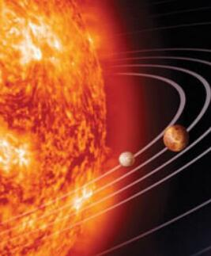

在文本中
在文本中图像 在文本中
图像 在文本中
图像 在文本中
图像 在文本中
请注意，bottom 对齐方式是默认的对齐方式。
带有图像的一个段落。图像的 align 属性设置为 "left"。图像将浮动到文本的左侧。
带有图像的一个段落。图像的 align 属性设置为 "right"。图像将浮动到文本的右侧。
通过改变 img 标签的 "height" 和 "width" 属性的值，您可以放大或缩小图像。

alt中值为图像不能正常显示时提示读者失去内容得信息
请点击图像上的星球，把它们放大。
注释：img 元素中的 "usemap" 属性引用 map 元素中的 "id" 或 "name" 属性（根据浏览器），所以我们同时向 map 元素添加了 "id" 和 "name" 属性。